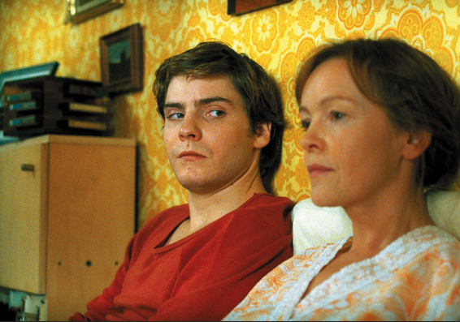

MAPA DE LO QUE SABEMOS
¿Qué sabemos antes de empezar?
|
Antes de comenzar esta situación de aprendizaje vamos a detenernos para descubrir qué sabemos ya sobre cómo se organizan las economías y cómo las decisiones económicas afectan a nuestra vida cotidiana. Esta actividad tiene dos partes. Primero reflexionarás individualmente y después construiremos entre todos un mapa colectivo de conocimientos, dudas e ideas. No es un examen. No necesitas conocer las respuestas "correctas". Lo importante es expresar lo que piensas y hacer visibles nuestras ideas iniciales para poder comprobar cómo evolucionan al finalizar la SDA. |
1. Piensa individualmente
|
Responde sin consultar apuntes ni Internet. Escribe lo primero que sabes o crees, aunque no estés completamente seguro.
|
2. Construimos nuestro mapa colectivo
|
Ahora ponemos en común nuestras respuestas. Entre todos organizaremos nuestras aportaciones en diferentes bloques: LO QUE SABEMOS: Ideas que creemos tener claras. LO QUE CREEMOS, PERO NO TENEMOS SEGURO: Hipótesis o ideas que necesitan comprobarse. LO QUE NO SABEMOS: Conceptos o cuestiones que todavía no podemos explicar. LO QUE QUEREMOS SABER: Preguntas que nos gustaría resolver durante la SDA. |
3. Compartimos y contrastamos
Mientras escuchamos a los demás, podemos: añadir una idea que no habíamos pensado, explicar una experiencia personal, plantear una duda, relacionar dos ideas, discrepar y explicar por qué. Escuchar una respuesta diferente a la nuestra no significa que tengamos que cambiarla inmediatamente. El objetivo es descubrir qué sabemos y qué necesitamos investigar.
Con las aportaciones de toda la clase iremos construyendo durante las siguientes sesiones un mapa como este:

Al terminar la unidad...
Revisaremos este mapa inicial para comprobar:
¿Qué hemos aprendido?
¿Qué ideas hemos cambiado?
¿Qué preguntas hemos conseguido responder?
¿Qué nuevas preguntas han aparecido?
EDPUZZLE
|
Observa cómo cambia la vida económica cotidiana de los habitantes de Alemania Oriental y utiliza las pistas del fragmento para formular hipótesis sobre quién decide qué se produce, cómo se produce y para quién. |
 |